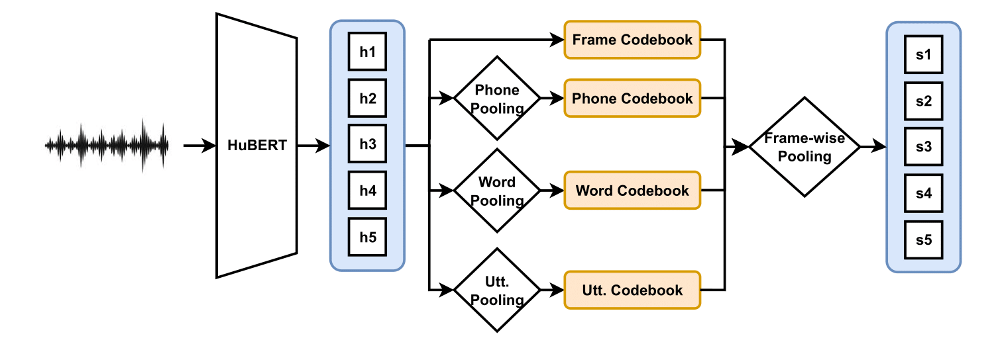

Segmentation-Variant Codebooks for Preservation of Paralinguistic and Prosodic Information
Anonymous Interspeech2025 submission
Segmentation-Variant Codebooks
We encode speech into continuous representations using HuBERT-large. Our method operates as follows: first, speech inputs are encoded into frame-wise continuous representations via HuBERT.
These representations are then pooled across segmentation boundaries (frames, phones, words, and utterances) derived from forced alignment applied to paired speech-text data.
For phone-, word-, and utterance-level segments, mean pooling is applied to aggregate frame-wise representations within each segment, while frame-level representations remain unpooled.
Each pooled or unpooled representation (corresponding to a segmentation level) is quantized using a dedicated Segmentation-Variant Codebook.
To construct these codebooks, we train separate K-means models (initialized with K-means++) on the representations for each segmentation level: the frame-level codebook is trained on raw frame-wise HuBERT outputs, while phone-, word-, and utterance-level codebooks are trained on their respective pooled representations.
During inference, quantization is performed by assigning each representation (pooled or unpooled) to the nearest cluster centroid in its corresponding codebook using Euclidean distance. This results in four parallel DSU output streams, each capturing linguistic structure at a distinct granularity (frame, phone, word, utterance).
Processing Multiple Streams of DSUs
For downstream tasks, there are potentially many ways that Segmentation-Variant DSU output streams could be processed.
We choose to mean pool all DSUs across matching segmentations previously use to pool the continuous representations.
For example, all frame DSUs that fall within the same utterance segment are averaged with the utterance DSU, all frame DSUs that fall within the same word segment are averaged with the same word DSU, and the same with the phones.
Therefore, the resulting sequence is the same length as the frame-level stream of DSUs. However, we recognize that future work may want to explore other processing methods of the multiple streams of DSUs. The full method overview can be seen in Figure 1.

Figure 1. Segmentation-Variant Codebooks processing overview. $h_n$ refers to continuous hidden representations at the $n$th frame, $S_n$ refers to the resulting frame-level stream obtained from mean pooling multiple streams of DSUs based on segmentation.